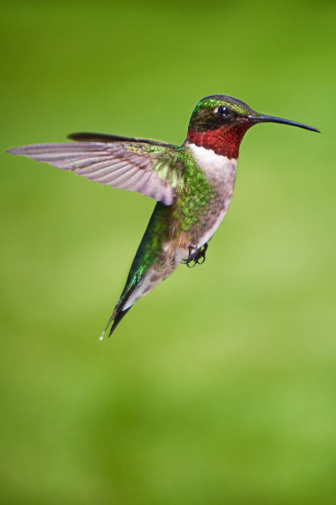
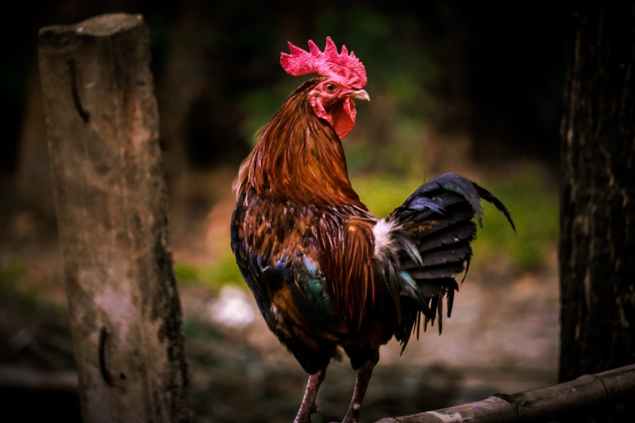
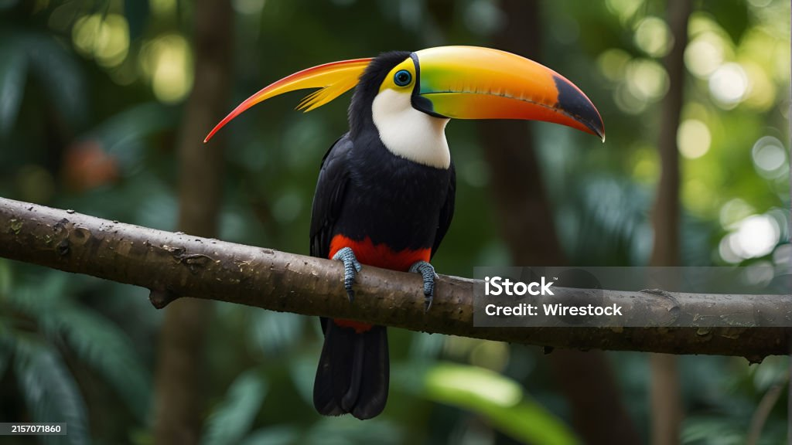

PEACOCK

The peacock is the most exquisite bird in the world because of its.
vibrant feathers and colour. The peacock is the national bird of
India and national pride for all of its citizens. Peacocks mainly
thrive by eating plants and small animals and are one of the largest
birds in the coun
PARROT

Parrots are known for their intelligence, unique personalities, long lifespan
(in some species, over 30 years!) and striking colouring. Some varieties,
such as African Greys, Amazons and Quakers have tremendous vocal ability,
resulting in the capacity to mimic the human voice, much to their owner’s delight.
HUMMINGBIRD

LeBaron says some ruby-throated hummingbirds (pictured) fly 500 miles nonstop across
the Gulf of Mexico during both spring and fall migrations. Others will stick to the
coast and travel the longer route down the edge of Texas instead.
ROOSTER

Hen can fly. But, hen cannot fly high. Hen eat food grains. Hen are grown in farms.
Hen is brown or black or white in color. Hen has a strong red beak on its face.
Hen has a red comb on its head..
CROW

These are birds with a robust and slender appearance, equipped with a small,
rounded head with a strong, conical beak, elongated and pointed, with a
slightly curved end towards the bottom; the legs are strong and the tail
is short and wedge-shaped.
PIGRON
Pigeons possess extraordinary navigation abilities and can sense the earth's magnetic field,
which is surprising since they are not a migratory species. Young birds are raced short
distances of 160 to 500km,
CRANE
Cranes are powerful flyers, with some having the ability to fly over the Himalayas. During migration
cranes fly with their head and neck straight out and their feet and legs straight behind them.
They are able to reach heights of 4,900–8,000 meters
TOUCAN

Toucans are best known for their large, colorful bills, which can be four times the size of their
head. They use their beak to reach food far out on branches or deep into tree cavities. Finding
and catching food is aided by a toucan's long tongue